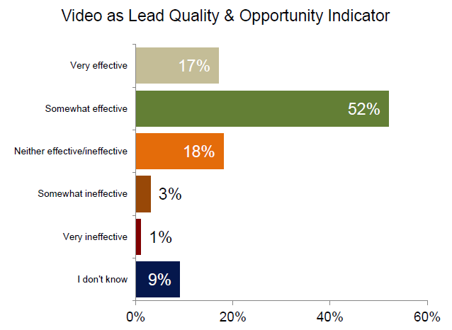

This Month in Video Marketing: September
After the headlines that Google made with video marketers in July when it reduced the number of video thumbnails shown, news from August focused on how marketers can survive & thrive in a post-rich snippet world. Septembers sees a number of new studies on the types of videos that resonate with consumers & how video performs vs other content types, as well as news for app marketers: Videos are coming to the App Store. Here’s what we poured over last month:
- New Research Proves Customers Rank Video as Trusted and Most Personable Brand Marketing Experience: The study, which questioned 2,000 consumers globally, highlights that 79% of consumers favor digital content over traditional, with more than one in ten (12%) preferring to consume content from brands on their smartphone, tablet or mobile application.”
- Brands Not Meeting Consumer Desire for Video: “Consumers enthusiastically watch branded videos according to new video marketing research from Levels Beyond that found some gaps in attitude between consumers and marketers. Levels Beyond found that 59 percent of consumers surveyed said they are likely to watch a branded video when they visit a website, and 61 percent have watched a branded video when a friend shared it socially.” (Source)
- Video Marketing Metrics, Get the Latest Research Report: “In the last helpful benchmark report from Demand Metric, we learned about the state of the industry overall. Results indicated that almost 70% of B2B marketers are using video in their mix, budgets are increasing, and 82% of B2B marketers reported success with video marketing initiatives.”

- Video Statistics: The Marketer’s Report 2014: “Invodo sheds light on trends in video: how much shoppers really love video, the implications that can be drawn from the industry’s growing relationship with video marketing, and the ways in which marketers are leveraging the medium today. “Online video is now an integral part of a consumer’s online experience. Within e-commerce, video helps consumers feel confident in their online purchases.” With 90 percent of consumers turning to online video—making them 1.81 times more likely to purchase than non-viewers—video’s efficacy is undeniable.” (Source)
- Videos Are Coming to the App Store: Tips for Marketers and Developers: “App developers can now upload a 30-second video to iTunes Connect, along with their other marketing materials and app updates. On September 17, App Store visitors will start seeing thumbnails of these videos (Apple calls them poster frames) alongside the screenshots for each app.”
- Reddit + Video: A Comprehensive Guide for Video Marketers: “Experienced video marketers know that they shouldn't put all of their eggs in one basket when it comes to distribution but Reddit could prove to be a valuable source of visibility if you play it right.”
- Why Most B2B Marketing Videos Don't Support The Buyer's Journey: “Most B2B marketing videos do not support the buyer’s journey because they are product-centric. Most B2B videos are designed for the “awareness” phase of the buyer’s journey—that is, “Introducing (ta-da!) Cloud Security v.3.0!” These overview “explainer” videos are useful. But . . . Product-centric videos—by themselves—do not support the buyer’s journey! Why not?”
-Team MediaNest